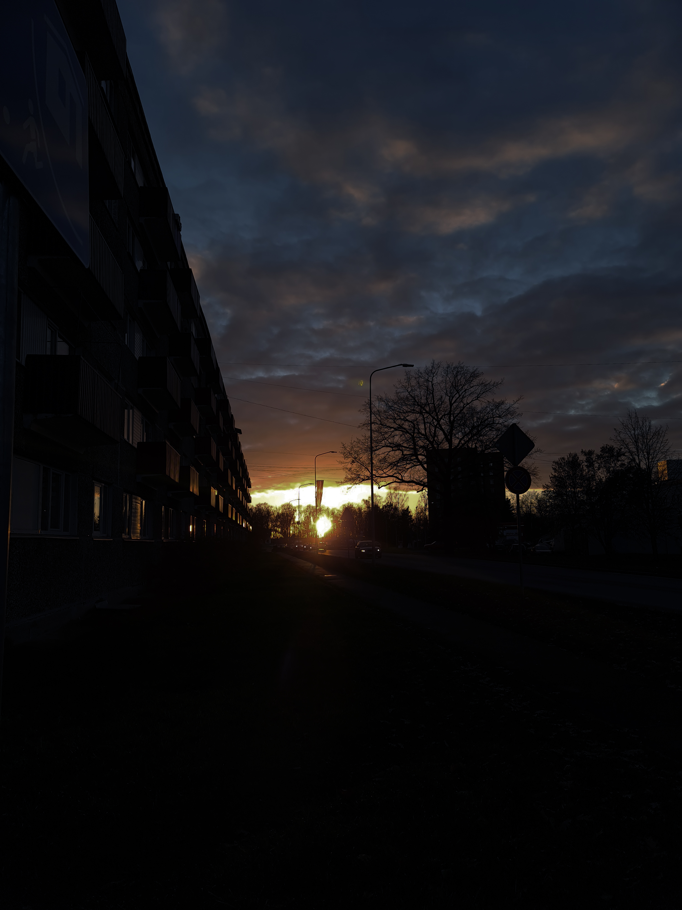
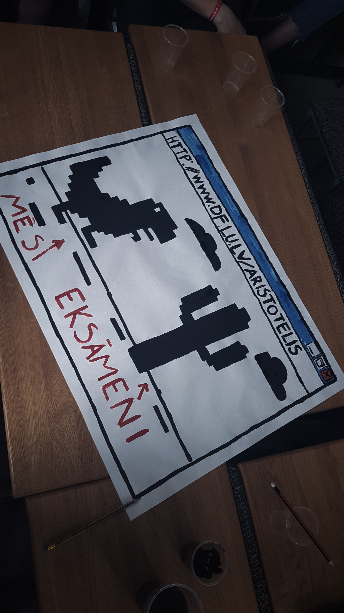

My way from home to the University of Latvia
Mentally, my way to the University of Latvia's Faculty of Computing started in 2018. To create the mood - it is the last year of high school, the choice to do with the future must be made very soon, but it is not yet decided what to do next. At the end of the school year, consideration is given to what was best done at school, and it was certainly informatics. This important choice is starting to weigh on the side of the IT industry. Graduation comes very quickly, then the application for higher education begins. Without needless thinking, 5 study programmes are selected, most of which relate to the IT field, as the first, most elected study programme is selected in Computer Science. Then I have a couple of weeks of stress, because I don't think I'm going to be accepted because I'm sure a lot of future students with better grades want to study in LU, but then there's a statement of acceptance!
This is my spiritual path to university in a shortened way, but the physical path will be described below. I have travelled from different places to university in 3 years, but the most frequent route is from home – Salaspils.
Salaspils - home
Salaspils, a city within a stretch of hand from Riga, is associated with a memorial or botanical garden for many. It is sometimes referred to as the “Riga sleeping area”. The proximity of Riga can be both an advantage and a disadvantage – I see it as an advantage.
I've been considering Salaspils my home for a long time. I haven't lived here since I was born, but most of my life here is certainly spent. My home is located in the heart of Salaspils, in the centre, at a distance of less than 10 minutes from Daugava, as well as close shops, mail, churches, various diners.

Apple tree road
To get to university, I use the train. But the railway station is a bit far from me, more specifically 1.5 km away. Since I live on Salaspils Main Street, the journey to the station is rather monotonous, straight, there is no need to turn. But despite that, there are some interesting things you can see.
Most of the road shows apple trees growing along the edges of the road, separating the pedestrian path from the machines. Especially beautiful apple trees look in the spring, when the leaves and flowers thrive. There is a meadow, in which the Salaspils City Council has recently promised to set up a park to take shelter from the day-to-day rush.

4 pedas
Almost on the track is a saladian popular restaurant – 4 Pedas. A terrace is available during the warm weather, but in the colder days food can be enjoyed indoors, with deep slants in leather chairs. Next to the restaurant is a duck pond, which can also be seen from the restaurant itself. In special days, such as the beginning and end days of the school, the restaurant is crowded, but it is possible here to order food and enjoy it at home, or in one of the green zones of Salaspille, at the pond just mentioned, or at Daugava.

Graffiti wall
I don't have much to say about this work of art – it's fun to look at and it's a popular place to make photographs in Salaspils among young people. In the picture, you can see how we tried to catch up with a friend the opportunities of Samsung's latest technology, Infinity Display *. We were both interested in taking pictures then, so armed with digital cameras and smartphones, we went to Salaspils's brighter places to try our shots. The image shown is captured with Samsung's Galaxy S8 and hasn't been digitally processed.
*Infinity Display: frame-free screen, wide, edge-to-edge

Salaspils railway station
The station has been running since 1861, having experienced various names in its time – Kurtenhof, Stopini, Salaspils.
The last stop before boarding the train is the Salaspils railway station. If there is a bit of time and luck, you can sit on wagons that are sometimes parked on unused tracks. If it is a very successful day, you can see flying objects – delpins, flying dragons, balloons.

University of Latvia Faculty of Computing
The university is only 8 minutes away when you get out at Riga station. You must pass through the mall in Origo, through the tunnel below Satekle Street, past the Institute of Mathematics and Informatics, past the Double Coffee Café, which can also come handy for a drink.
Physically, my path ends here – on Rain Street 29. But given the situation of this moment, I haven't been physically at university for a long time so the whole road is well shorter and faster, it starts and ends at home. Instead of almost an hour of road, you have to sit at the table and turn on your computer and you can take part in lectures.
The picture shows my first day at university as a student – we had to draw a poster for Aristotlis event.

Alīse Daine, My way from home to the University of Latvia